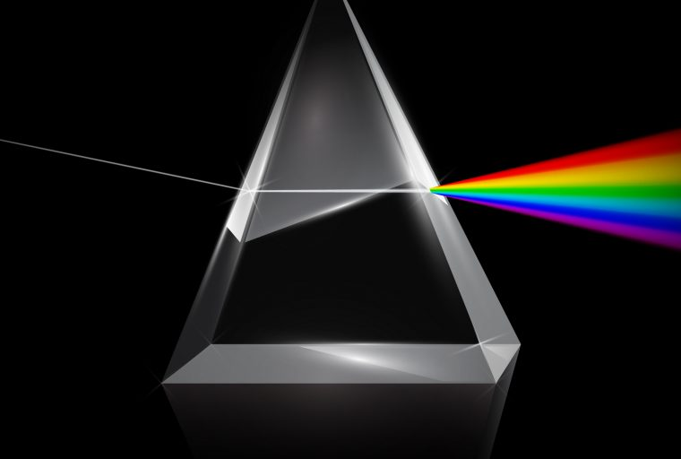

Back to home
Light
Some important videos
Brief history
The search for the true nature of light goes back centuries and includes contributions from some of the most illustrious scientists in history. Studying light Copyright Photo Researchers, Inc. 2002 To the ancient Egyptians, light was the gaze of their supreme god, Ra, and it emanated from the sun and the moon, Ra’s eyes. The ancient Greeks believed the reverse: Pythagoras thought internal fires in the human eyes illuminated the world, while Plato believed sight was only possible when the fires of the eye met and combined with daylight, the fire of the sun. In 1000 AD, a Persian scientist named Abu Ali Hasan Ibn al-Haitham (known in the west as Alhazen) used a combination of logic and experimentation to show that light did not shoot out from our eyes, but entered into them, to produce vision. Centuries later, his work influenced Roger Bacon and Johannes Kepler, among others. In the seventeenth century, a debate erupted over the definition of light. Christiaan Huygens believed light was a wave, while Isaac Newton argued that it was a particle. Due mainly to his well-established reputation, Newton’s particle theory won out and was accepted for more than a century. The pendulum swung the other way in the early nineteenth century. In 1801 Thomas Young performed a series of ingenious experiments showing that light rays could interfere with one another in a way similar to water and sound waves. A half-century later, the Scottish scientist James Clerk Maxwell showed that electric and magnetic fields travel through space together in the form of intertwined waves. Maxwell further demonstrated that these “electromagnetic” waves travel at precisely the speed of light, leading him to correctly propose that light was an electromagnetic wave. The debate seemed settled and Huygens appeared vindicated, but in the early twentieth century, the work of Max Planck, Albert Einstein, and many others revealed a strange third possibility, which repeated experiments have since confirmed: Both light and matter, it turns out, exhibit properties of both waves and particles. Called wave-particle duality, this is a central concept in quantum mechanics.
Useful links
LanchSome Useful formula